el 29 de junio las Iglesias cristianas Católica y Ortodoxa festejan la Solemnidad de San Pedro y San Pablo Apóstoles, dos mártires fervientes de su amor a Cristo y fieles seguidores de la voluntad de Dios, quienes defendieron el Evangelio con sus vidas.
De acuerdo al Santoral católico, esta festividad religiosa es celebrada como solemnidad. Esta fecha, que se conmemora desde el siglo I, rememora el
 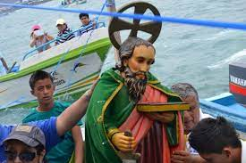
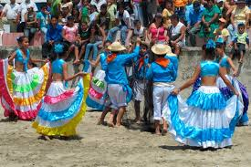
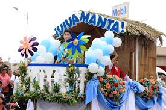
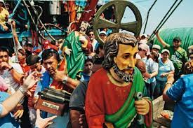
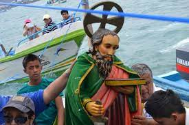
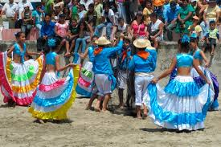
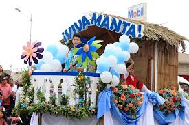
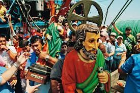
 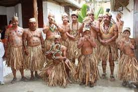
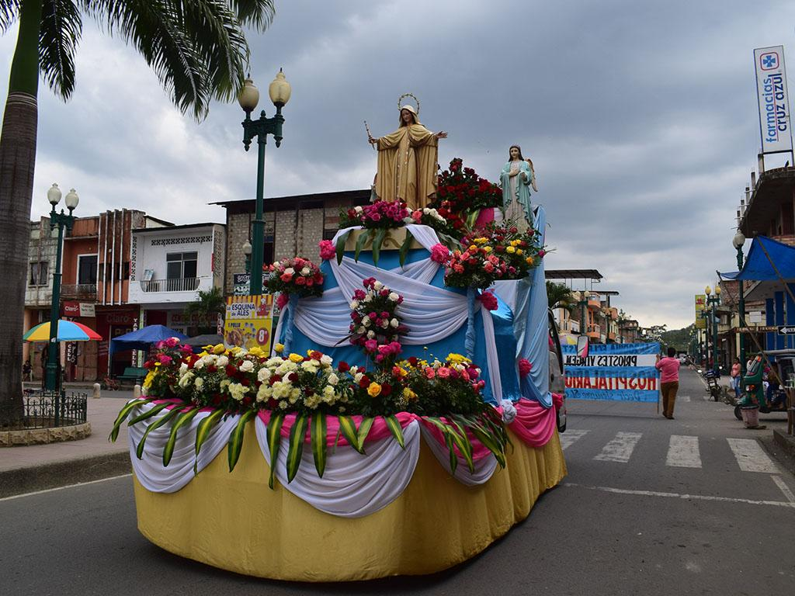
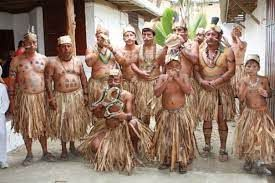
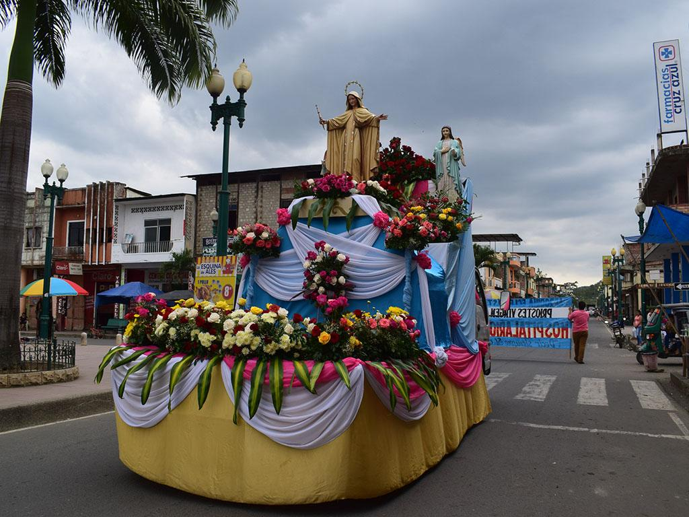
 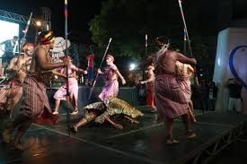
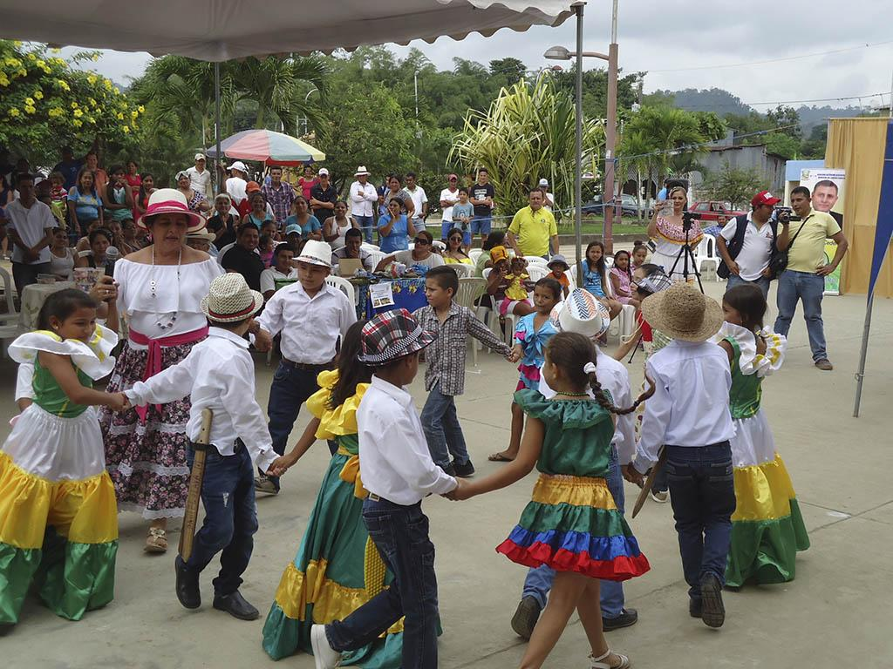
Ir a home
Ir a sitios geograficos
Ir a sitios turisticos
Ir a costrumbres
ir a galeria
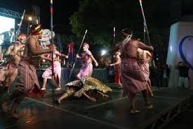
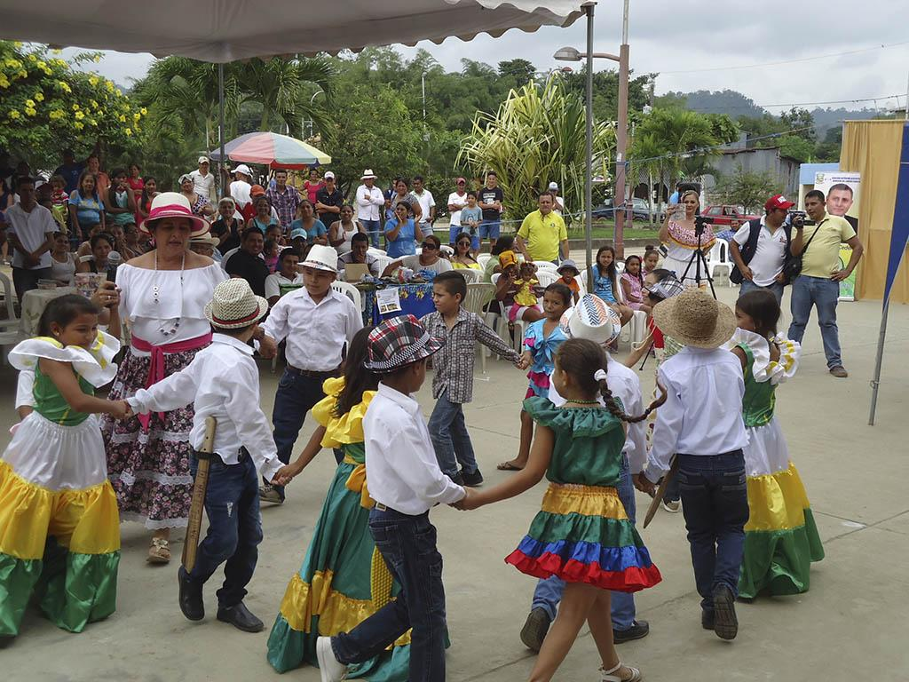
Ir a home
Ir a sitios geograficos
Ir a sitios turisticos
Ir a costrumbres
ir a galeria